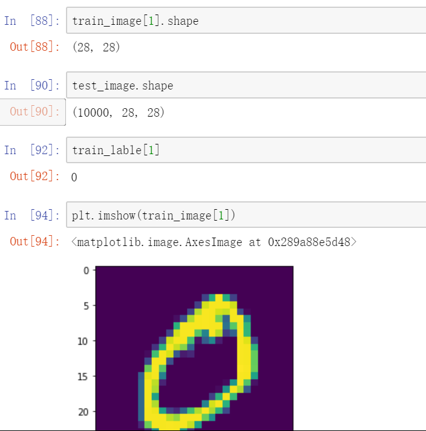

原文连接:https://www.cnblogs.com/skylarzhan/p/11565214.html
最近学习神经网络，tensorflow，看了好多视频，查找了好多资料，感觉东西都没有融入自己的思维中。今天用tensorflow2.0写了一个MNIST手写体的版本，记录下学习的过程。
复现手写体识别的基本步骤：准备数据，处理数据，搭建模型，迭代训练模型，使用模型。
一、全连接模型
1、导入数据集（此次编写运行均在notebook）
先引入所需模块，在用tf.keras下载数据
2、分析图片的大小
1）用shape查看数量大小；2）通过指定[0][1]来查看具体图像尺寸，lable存储的是image对应的数值

3、处理数据
就将原先的0-9label转换为独热编码，独热编码即 One-Hot 编码，又称一位有效编码，其方法是使用N位状态寄存器来对N个状态进行编码，每个状态都由他独立的寄存器位，并且在任意时候，其中只有一位有效。

4、构建模型
1）tf.keras.Sequential()构建一个顺序模型（此处模型的层数参照3blueBrown4层）
2）第一层输入层是28*28个神经元，由传入图像的像素大小决定，Flatten是用来格式化数据的，将数据转化为一列。
3）第二层和第三层各16个神经元，激活函数定义为sigmoid
4）第四层输出层0-9，一共输出10个不同的，softmax是概率分布型
5、训练模型
1）model.compile(loss='目标函数', optimizer=optimizer, metrics=['accuracy'])
2）fit( x, y, batch_size=32, epochs=10, verbose=1, callbacks=None, validation_split=0.0, validation_data=None, shuffle=True, class_weight=None, sample_weight=None, initial_epoch=0)
6、图观模型
一百次后，测试集跟训练集的准确性图示
二、卷积模型
卷积网络大体布置为卷积层-池化层-全连接层。基础知识储备如何进行卷积前的估算，并且对相关数据进行调整，添加一层channel，确保数据一致性。
2.1基础知识储备（卷积参数参照LeNet-5）
2.2加载并对数据进行处理，与全连接不同的是，对数据还要再添加一层channel，手写体是黑白图片，故而设置为1。
2.3参照上面的卷积处理，建立模型，并运行模型
2.4 模型运行结果图示